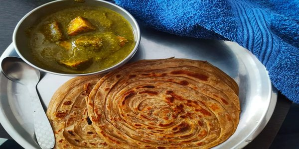

Easy Palak Paneer
A delicious Indian dish, good on its own or served with rice or naan
bread. Substitute tofu for paneer to make it vegan.

Ingredients
2 tablespoons olive oil, divided 1 onion, diced 6 cloves garlic, crushed
2 teaspoons ground coriander 2 teaspoons ground turmeric 2 teaspoons
garam masala 2 teaspoons red pepper flakes 2 teaspoons curry powder 2
teaspoons ground cumin 1 teaspoon salt 1 cup water 2 (10 ounce) packages
frozen chopped spinach, thawed and drained 3 tomatoes, diced 2
tablespoons grated fresh ginger root 2 cups cubed paneer
Directions
-
Heat 1 tablespoon olive oil in a skillet over medium heat; cook and
stir onion until slightly tender, about 5 minutes. Add garlic,
coriander, turmeric, garam masala, red pepper flakes, curry powder,
cumin, and salt; cook and stir until fragrant, about 1 minute.
-
Mix water, spinach, tomatoes, and ginger into the onion mixture;
simmer for 20 minutes. Remove from heat and cool slightly, about 5
minutes.
- Transfer spinach mixture to a blender and blend until smooth.
-
Heat remaining 1 tablespoon olive oil in a skillet over medium heat;
cook and stir paneer until lightly browned, about 5 minutes. Stir
pureed spinach mixture into skillet with paneer. Cook until heated
through, 3 to 5 minutes.